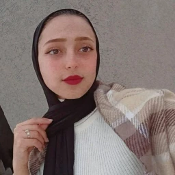
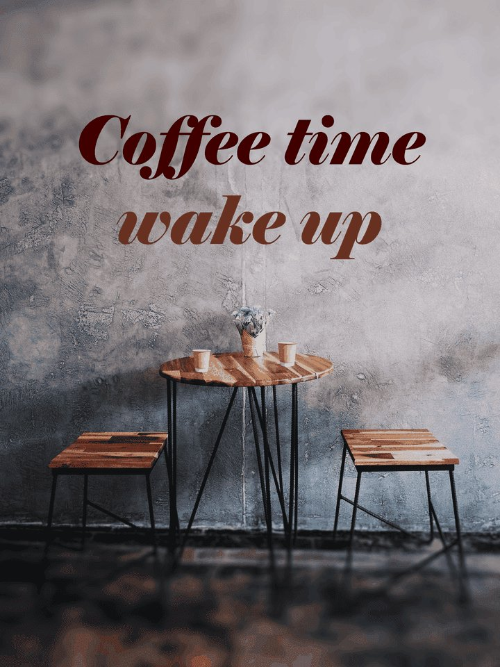
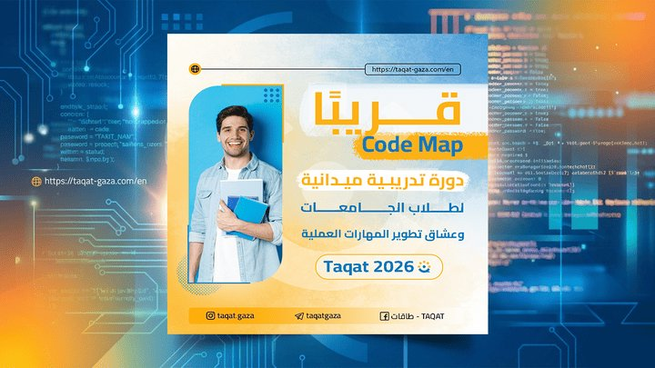

إسراء عمر معمر
مصممة جرافيك | طالبة نظم معلومات في جامعة الأقصى
نبذة عني
أنا إسراء عمر معمر، مصممة جرافيك وطالبة نظم معلومات في جامعة الأقصى من غزة. أعمل في تصميم الشعارات والهويات البصرية وإعلانات السوشيال ميديا، وأحب الجمع بين التصميم وتطوير صفحات الويب لتقديم عمل مريح وبسيط.
المهارات
- Photoshop
- Illustrator
- تصميم الشعارات
- تصميم إعلانات وبوسترات
- تصميم ستوري إنستغرام
- HTML5
- CSS3
- نظم المعلومات
- التصميم المتجاوب
التعليم
| الدرجة العلمية | المؤسسة | السنة | الحالة |
|---|---|---|---|
| بكالوريوس نظم معلومات | جامعة الأقصى | 2023 - حتى الآن | قيد الدراسة |
| شهادة الثانوية العامة | المدرسة الثانوية | 2019 - 2023 | مكتملة |
| دورات في التصميم الجرافيكي | تدريب ذاتي ومنصات تعليمية | 2024 | مكتملة |
نماذج من أعمالي السابقة

ستوري إنستغرام لكافيه
تصميم ستوري مخصص لكافيه بأسلوب جذاب لإبراز هوية المكان.

بوستر إعلان لمتجر CNT
تصميم إعلان سوشيال ميديا يروج لمنتجات المتجر بطريقة واضحة.

بوستر دورة كود ماب
تصميم بوستر إعلاني لدورة تدريبية موجهة للطلاب والمطورين.